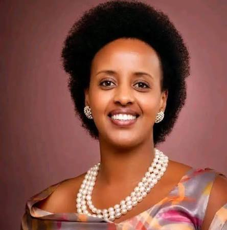
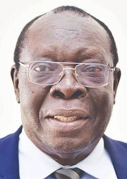

Speakers
Meet the featured voices from government, research and industry.

Dr. Sarah Namutebi
Director of Crop Production, MAAIF
Dr. Namutebi leads national programmes on coffee productivity and extension. She has spent over fifteen years working with smallholder farmers across Uganda.

Mr. Daniel Okello
Chief Executive, Uganda Coffee Exporters Alliance
Mr. Okello represents exporters on market access and pricing policy. He has negotiated supply agreements with buyers in Europe, Asia and the Middle East.

Prof. Maria Kintu
Head of Agronomy, Makerere Coffee Research Centre
Professor Kintu studies climate adaptation and disease resistance in Robusta and Arabica. Her field trials have informed planting guidance used by thousands of farmers.

Ms. Joan Atim
Head Taster, Pearl Specialty Coffee Roasters
Joan is a certified Q Grader who has judged national and regional cupping competitions. She trains young cuppers in quality assessment and sensory skills.
More Speakers
| Name | Organisation | Country | Session Title |
|---|---|---|---|
| Ms. Lillian Fabiano | Cooperative Finance Facility | Kenya | Access to Finance for Coffee Cooperatives |
| Mr. Pedro Hernandez | Cerrado Specialty Imports | Brazil | Specialty Coffee and Premium Buyers |
| Dr. Eyob Girma | Addis Coffee Technology Institute | Ethiopia | Roasting and Processing Technology Workshop |
| Ms. Hanna Vogel | Hamburg Green Coffee Traders | Germany | Traceability and Export Standards |
Call for Papers
We invite researchers, practitioners and students to submit abstracts on coffee production, processing, quality, markets and policy. Abstracts should not exceed 300 words and must state the objective, method and main findings.
Submissions are reviewed by an independent panel. Accepted authors will present for 15 minutes during the Friday research session and may be asked to submit a short final paper.
| Milestone | Date | Status |
|---|---|---|
| Abstract submission deadline | 31 July 2026 | Open |
| Notification of acceptance | 15 August 2026 | Upcoming |
| Final presentation submission | 1 September 2026 | Upcoming |